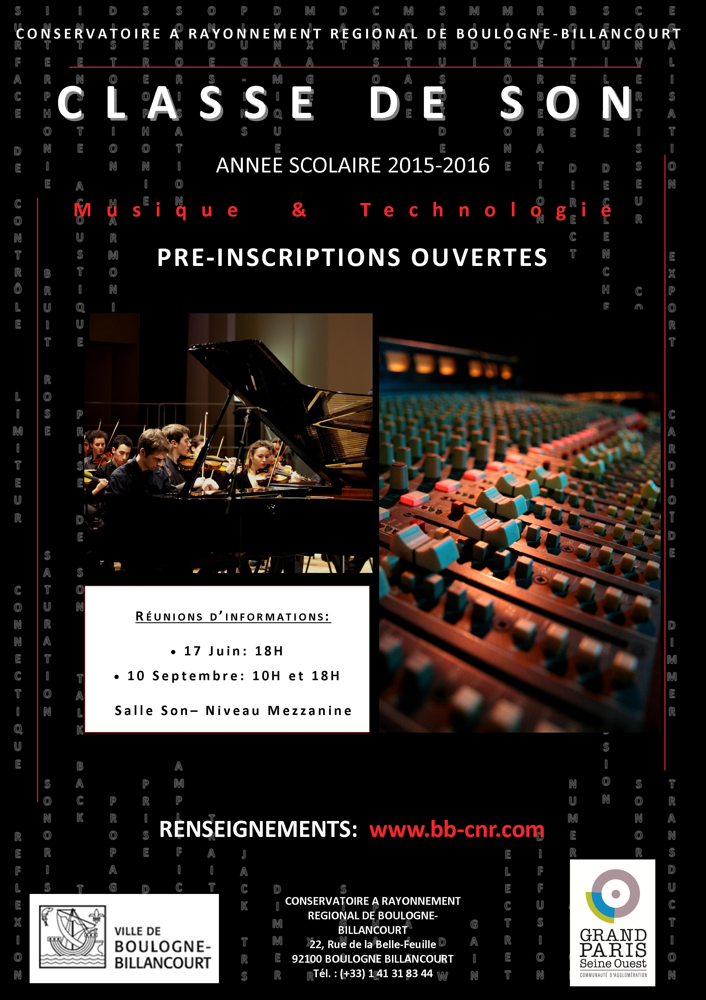

| UV libre initiation à l'imporvisation |
| UV libre initiation au son |
| UV libre Piano complémentaire |
| UV libre initiation à la direction de choeur |
| UV libre initiation à la direction d'orchestre |
| UV libre initiation à la musique ancienne |
| Bois | Cuivres | Cordes |
|---|
|
|
|
|
|
|
|

| Claviers | Percussions |
|---|
|
|
|
|
|

|
|
|

|
|
|

|
|
|


Classe de son
Dossier d'inscription
Le dossier d'inscription au concours est disponible à l'accueil du conservatoire à partir du mois de septembre - également téléchargeable sur le site (consulter la rubrique Admissions et concours)
Concours année scolaire 2015-2016
L'admission se fait uniquement sur concours.
- limite d'âge 25 ans
- être titulaire d'un bac, de diplômes de l'enseignement supérieur
- posséder un niveau musical permettant d'être à l'aise dans la lecture de partitions
- s'acquitter des droits d'inscription

Equipe pédagogique
Direction
Adjointe de la directrice, Responsable de la Vie scolaire Musique Cycles1 à COP, Théâtre, Pôle supérieur (*) : Héléne GENET Adjointe de la directrice, Coordinatrice pédagogique Danse, CHAM/CHAD, Pôle Supérieur (*) : Ann VIGNAL (Intérim d'Héléne CELHAY) Coordinatrice pédagogique Formation Musicale : Caroline HEYRAUD-KUZMA Coordinatrice pédagogique C.O.O.M. : Lucie MADURELL (*) Pôle Supérieur Paris-Boulogne-Billancourt (PSPBB) : Héléne GENET, conseillére aux études - Musique, coordinatrice des cursus Direction et Création, Ann VIGNAL, coordinatrice des enseignements universitaires.
Le cursus général
Organisation
Le cursus des études est organisé en quatre cycles, d'une durée variable comprise entre 2 et 4 ans. Ils correspondent en durée et contenu à l'évolution moyenne de la maturité et de la capacité d'évolution des enfants. Le cursus comprend pour chacun des cycles, outre la discipline principale instrumentale ou chorégraphique un ensemble de disciplines complémentaires obligatoires : formation musicale, orchestres, musique de chambre notamment. Il comprend également des disciplines optionnelles : second instrument, érudition, écriture musicale, accompagnement, etc ... L'admission pour chacun des cycles est conditionnée par la réussite à des tests ou concours d'entrée, organisés entre les mois de mai et octobre de chaque année.
- Cycle 1 et 2
- Cycle 3 (CEM & CEC)
- Cycle spécialisé ( DEM & DEC)
Le cycle 1 permet de dérvelopper la motivation de l'enfant et d'értablir les fondements d'une mérthode de travail. Le cycle 2 prolonge et approfondit les acquis du premier cycle dans une perspective d'érquilibre entre les différrentes disciplines, tout en favorisant l'accés l'autonomie musicale.
Le cycle 3 a pour objet l'approfondissement des connaissances et des pratiques pour les musiciens et danseurs amateurs. Il prépare à l'obtention du Certificat de fin d'Etudes musicales ou chorégraphiques.
Cycle destiné à approfondir la motivation et les aptitudes des éléves en vue d'une orientation professionnelle. Il dispense un enseignement permettant à l'éléves d'acquérir une culture artistique et un savoir-faire nécessaire à une pratique confirmée.
La fin du cursus d'études est sanctionnée par l'attribution du diplôme d'études musicales (DEM) ou chorégraphiques (DEC), diplômes nationaux validés par le ministère de la Culture, qui permettent une orientation ultérieure vers les métiers de la musique et de la danse.
En savoir plus: télécharger le Règlement des études du cursus instrumental (PDF)Admissions et concours
Classes à horaires aménagés musique et danse
- Procédures d'inscription et d'admission Musique et danse, de l'école élémentaire au lycée : consulter la rubrique: Classes à horaires aménagés
- Programmes imposés pour l'entrée 2015-16 - Collèges et lycées consulter la liste ci-dessous:
Formation musicale
- Pour les niveaux scolaires CP consulter la rubrique: cycle d'observation et d'orientation musicales
- Pour les niveaux scolaires CE1 CE2 CM1 CM2 Concours d'entrée: Un test de formation musicale est ouvert aux débutants scolarisés en CE1, CE2, CM1 et CM2, habitant Boulogne-Billancourt et les communes de la Communauté d'agglomération Grand Paris Seine Ouest suivantes : Chaville, Issy-les-Moulineaux, Meudon, Sèvres, Vanves, Ville d'Avray. Les inscriptions sont prises sur place le jour du test de formation musicale. Pièces à fournir pour l'inscription : 2 photos + un justificatif de domiciliation à Boulogne. Le test comprend des épreuves d'aptitudes musicales, rythmiques et un entretien de motivation. Pour les élèves qui ont déjà fait de la musique, le jury orientera les élèves :
- soit vers un concours d'entrée en instrument au Conservatoire
- soit vers l'Ecole de Musique
Informations diverses
- EXAMENS DE FIN D'ANNEE SCOLAIRE suivre ce lien
- FIN DES COURS 2014-15 : Les dates ! (Dates de fin des cours d'instruments, formation musicale, chorales) suivre ce lien
- S'INSCRIRE AUX CONCOURS (Dates des épreuves, programmes, convocations, résultats d'admission) suivre ce lien
- RENTREE SCOLAIRE 2015-16 : des dates à retenir ! Rencontres avec les professeurs Ces rencontres sont destinées à réserver les jours et horaires des cours. Elles sont organisées la semaine qui précède la rentrée au conservatoire. Rentrée scolaire CHAM/CHAD Informations et dossiers d'inscription pour la rentrée 2015-2016. suivre ce lien Rentrée scolaire COOM Consulter la rubrique: suivre ce lien Rentrée scolaire inscriptions/réinscriptions consulter le tableau des dates à retenir
- Consulter le calendrier scolaire de l'année et pour les années à venir : http://www.education.gouv.fr/pid184/le-calendrier-scolaire.html